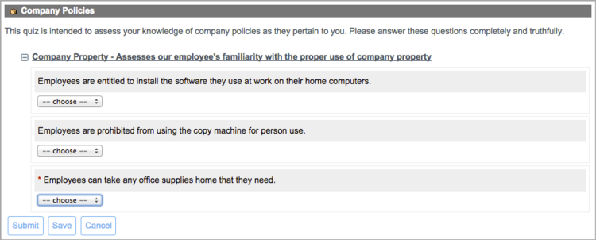
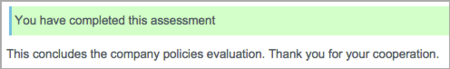
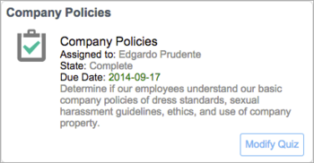

Completing Quizzes
1 Overview
All available quizzes assigned to you appear in your personal assessment and survey queue. When you submit a quiz, the system stores your responses. If a quiz allows retakes, you can resubmit it as many times as you like until its due date.
No special role is required to complete a quiz, but you must be logged in and the quiz must be assigned to you.
2 Quiz Notifications
If configured to send email, the system sends you a notification when a quiz is assigned to you. The message contains a link to the quiz and instructions for viewing the assessment and survey queue.
3 Taking a Quiz
Each quiz assigned to you appears in your assessment and survey queue as a card that contains information about the quiz, including a launch button. Overdue quizzes are clearly marked with a red icon and red due date.
You must answer every mandatory question, indicated by a red star, before you can submit the quiz. If you start to take a quiz but cannot complete it, save your responses and return to it later. When you have answered all the questions and are satisfied with the responses, submit the quiz.
By default, you cannot modify your answers to a quiz after submission. However, if the administrator has configured this quiz to allow retakes, the quiz remains in your queue after you finish it and the card shows a Modify Quiz button. You can retake the quiz as many times as you like before the due date. The Modify Quiz option is available starting with the Fuji release.
To view your queue and take a quiz:
- Navigate to Self-Service > My Assessments & Surveys.
- Click Take Quiz on a quiz card to open the questionnaire.
- If there is more than one quiz category, you can click the collapse (
 ) or expand (
) or expand ( ) icon to hide or show the questions in the category.
) icon to hide or show the questions in the category. -
- 
-
- If there is more than one quiz category, you can click the collapse (
- Answer each question to the best of your ability.
- If you are unsure of how to respond to a question or if a question does not apply to you, select Not Applicable, if that choice is available.
- Click Save at any time to save your responses without submitting them.
- You can reopen the quiz from your queue when you are ready to work on it again.
- When you are ready to submit the completed quiz, read any assertions that require your attention.
- If present, select the check box to acknowledge the assertion.
- If your full name is displayed, you are required to provide authentication to acknowledge the assertion after you submit the quiz.
- Click Submit.
- If prompted, enter your user name and password to verify your signature.
- If you provided valid answers for all mandatory questions, a success message appears, displaying any end note that was configured. If the quiz allows retakes, the card remains in your queue with a Modify Quiz button after submission. If retakes are not permitted, the card disappears from your queue.
- 
- If the system displays an error message indicating that a question has an invalid response or must still be answered, correct the error and resubmit the quiz.
- To edit your answers and resubmit a quiz that permits retakes, click Modify Quiz.
- You can modify your responses to the quiz until its due date.
- 
{kind=link}
{kind=link}
{kind=link}
{kind=link}
{kind=link}
{kind=link}